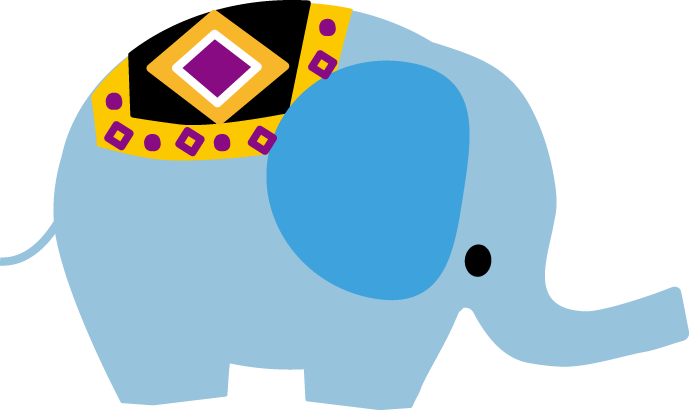

英語版
動物と文化の関係性の検索

動物名：
select distinct ?t (count(?o) AS ?c) where { ?o ?p <http://ja.dbpedia.org/resource/#INPUT#> . ?o a ?t. FILTER(regex(str(?t),"dbpedia.org/ontology")) }GROUP BY ?t ORDER BY DESC(?c)
select distinct ?t ?o ?w where { ?o ?p <http://ja.dbpedia.org/resource/#INPUT2#> . ?o a ?t. ?o foaf:isPrimaryTopicOf ?w FILTER(regex(str(?t),"http://dbpedia.org/ontology/")) FILTER(regex(str(?t),"http://dbpedia.org/ontology/#INPUT3#")) }